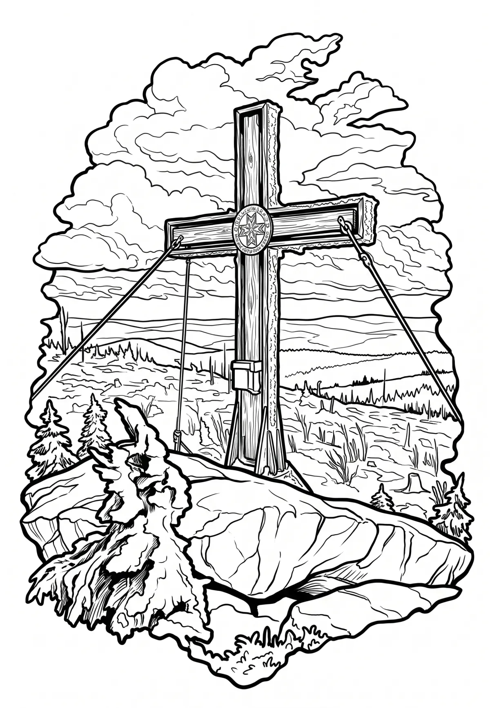

Plechý
Jihočeský kraj · 1378 m n. m.

přírodní památka · #048
Plechý (německy Plöckenstein) je 1378 m vysoká hora ležící v pohoří Šumava na česko-rakouské hranici. Je pátým nejvyšším vrcholem na Šumavě, nejvyšším vrcholem české i rakouské části Šumavy a zároveň i nejvyšším vrcholem Jihočeského kraje a hornorakouského Mühlviertelu. Zároveň je devátou nejizolovanější českou horou.